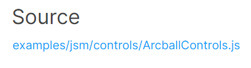

Typy ovládání
V této části si ukážeme, jak můžeme s canvasem provádět interakci. Myslím si že by jste byli schopni si pro interakci s canvasem něco naprogramovat. Mohli byste si například vytvořit event listener na stisknutí kláves a třeba pomocí nich na scéně posouvat nějaký objekt. Three.js nám ale pro interakci se scénou poskytuje pár užitečných typů ovládání. Takže si je v této části projdeme, abyste o nich věděli a v případě potřeby je mohli použít.
Tato ovládání nejsou součástí THREE objektu, který si do našeho JavaScriptu importujeme, jelikož je všichni uživatelé nepotřebují. Budeme si je tedy vždy muset naimportovat samostatně. Odkud něco naimportovat se vždy můžete dočíst v dokumentaci v části source, když si tam rozkliknete nějakou třídu.
Startovní kód
Abychom měli nějakou scénu na které si můžeme různé typy ovládání vyzkoušet, tak si ji vytvoříme. Pomocí startovního kódu z části o Webpacku si vytvořte nový projekt a do JavaScript souboru vložte kód, který ukazuje následující ukázka. Tento kód jen vytváří scénu, kameru, renderer a přidává do scény pár objektů. Také nastavuje animační smyčku aby se scéna renderovala každý frame a přidává event listener pro změnu velikosti okna prohlížeče protože canvas roztahujeme po celé jeho velikosti. O animační smyčce jste se dozvěděli v části o animaci a o měnění velikosti canvasu v minulé části, takže to není nic nového.
import './style.css';
import * as THREE from 'three';
// vytvoření scény
const scene = new THREE.Scene();
// vytvoření materiálů
const orangeMaterial = new THREE.MeshBasicMaterial({ color: 0xFAB278 });
const blueMaterial = new THREE.MeshBasicMaterial({ color: 0x78E8FA });
const greyMaterial = new THREE.MeshBasicMaterial({ color: 0xdedede });
// vytvoření a přidání objektu do scény
const plane = new THREE.Mesh(
new THREE.PlaneGeometry(10, 10),
greyMaterial
);
plane.rotation.x = -Math.PI * 0.5;
scene.add(plane);
// vytvoření a přidání objektu do scény
const cube = new THREE.Mesh(
new THREE.BoxGeometry(1, 1, 1),
blueMaterial
);
cube.position.y = 0.5;
scene.add(cube);
// vytvoření a přidání objektu do scény
const cone = new THREE.Mesh(
new THREE.ConeGeometry(0.6, 1, 4),
orangeMaterial
);
cone.position.y = 1.5;
scene.add(cone);
// vytvoření a přidání objektu do scény
const sphere = new THREE.Mesh(
new THREE.SphereGeometry(1.5, 8, 6),
orangeMaterial
);
sphere.position.y = 0.75;
sphere.position.x = -2;
sphere.position.z = 2;
scene.add(sphere);
// vytvoření a přidání objektu do scény
const torus = new THREE.Mesh(
new THREE.TorusGeometry(0.6, 0.2, 8, 8),
blueMaterial
)
torus.rotation.x = Math.PI * 0.5;
torus.position.y = 0.1;
torus.position.x = 4;
torus.position.z = -2.5;
scene.add(torus);
// vytvoření kamery
const camera = new THREE.PerspectiveCamera(45, window.innerWidth / window.innerHeight, 0.1, 1000);
// napozicování kamery
camera.position.z = 5;
camera.position.y = 1;
// přidání kamery do scény
scene.add(camera);
// získání canvasu podle id
const canvas = document.getElementById("WebGLCanvas");
// vytvoření rendereru
const renderer = new THREE.WebGLRenderer({
canvas: canvas
});
// nastavení velikosti canvasu
renderer.setSize(window.innerWidth, window.innerHeight);
// nastavení pixel ratio
renderer.setPixelRatio(Math.min(window.devicePixelRatio, 2));
// přidání event listeneru pro změnu velikosti okna
window.addEventListener("resize", () => {
// aktualizování poměru stran kamery
camera.aspect = window.innerWidth / window.innerHeight;
camera.updateProjectionMatrix();
// aktualizování velikosti canvasu
renderer.setSize(window.innerWidth, window.innerHeight);
renderer.setPixelRatio(Math.min(window.devicePixelRatio, 2));
});
// tato funkce je volána každý frame
function tick() {
renderer.render(scene, camera);
}
// nastavení animační smyčky
// - funkce tick se bude volat každý frame
renderer.setAnimationLoop(tick);Kromě předchozího JavaScript kódu si zkopírujte také následující CSS kód a vložte do CSS souboru, abyste se zbavili defaultních marginů nebo paddingů a canvas se vám roztáhl přes celé okno prohlížeče.
*, *::before, *::after {
padding: 0;
margin: 0;
}
body {
overflow: hidden;
}Teď máme vše připraveno na to, abychom si mohli vyzkoušet různé typy ovládání, které nám Three.js nabízí. Pokud si aplikaci spustíte v prohlížeči, tak uvidíte vyrenderovanou scénu.
Arcball Controls
Prvním typem ovládání, které si ukážeme, je ArcballControls. Toto ovládání nám umožňuje pohybovat kamerou kolem takové virtuální koule pomocí levého tlačítka, posouvat kamerou horizontálně nebo vertikálně pomocí pravého tlačítka a přibližovat se nebo se oddalovat pomocí kolečka myši. Také to funguje na mobilu pomocí různých gest. Více si o tom můžete přečíst v dokumentaci. Nebudu to tu rozebírat protože je to stejně zbytečné. Mnohem lépe pochopíte jak to funguje, když si ovládání zkusíte v ukázce sami. ArcballControls ovládání není vůbec složité na implementaci. Stačí jen zavolat konstruktor a vše je připraveno. Nejdříve si ale musíme ArcballControls naimportovat. Již jsem psal výše že ovládání nejsou součástí objektu THREE, který si do našeho JavaScript souboru importujeme. Následující ukázka ukazuje jak to udělat.
import './style.css';
import * as THREE from 'three';
import { ArcballControls } from 'three/examples/jsm/controls/ArcballControls';
/* ... */Teď si můžeme ovládání vytvořit jednoduchým zavoláním konstruktoru třídy ArcballControls. Jako parametr předáme kameru, canvas a scénu.
/* ... */
// vytvoření ArcballControls ovládání
const controls = new ArcballControls(camera, canvas, scene);To je vše co jsme museli pro implementaci ArcballControls ovládání udělat. Teď si můžete aplikaci v prohlížeči spustit a ovládání si vyzkoušet.
ArcballControls ovládání si můžeme ještě různě nastavit a vypnout například pohyb kamery horizontálně a vertikálně. Tím už se ale zabývat nebudeme. Co všechno můžete pro ArcballControls nastavovat najdete v dokumentaci, takže si myslím že si s tím poradíte sami.
Drag Controls
Jako druhý typ ovládání si ukážeme DragControls. Pomocí tohoto ovládání můžeme po scéně pohybovat objekty kliknutím a tažením. Opět se nebudu pouštět do detailnějšího vysvětlování, v ukázce to pochopíte lépe. Následující ukázka ukazuje, jak si můžete DragControls naimportovat. Než se do toho ale pustíte, tak si odstraňte ArcballControls ovládání, pokud jste si jej zkoušeli.
import './style.css';
import * as THREE from 'three';
import { DragControls } from 'three/examples/jsm/controls/DragControls';
/* ... */Po naimportování DragControls ovládání jej můžeme použít. Opět je to jen otázka zavolání konstruktoru třídy DragControls a předání pár parametrů. Prvním parametrem je pole objektů, které chceme uživateli umožnit pohybovat, druhým je kamera a posledním je canvas.
/* ... */
// vytvoření DragControls ovládání
const controls = new DragControls([cube, cone, sphere, torus], camera, canvas);Po spuštění aplikace budete moci objekty ve scéně posouvat pomocí myši.
V dokumentaci si o DragControls můžete přečíst víc, pro ukázku to stačilo.
First Person Controls
Jako další typ ovládání si ukážeme FirstPersonControls. Smažte si v kódu předchozí ovládání (pokud jste si jej zkoušeli) a můžeme se do toho pustit. Možná si můžete myslet že když se toto ovládání jmenuje FirstPersonControls, tak se třeba hodí k ovládání hráče ve first person střílečce. Není tomu tak, je to spíš alternativní implementace FlyControls ovládání, které si zachvíli ukážeme. Následující ukázka ukazuje, jak můžeme FirstPersonControls ovládání naimportovat.
import './style.css';
import * as THREE from 'three';
import { FirstPersonControls } from 'three/examples/jsm/controls/FirstPersonControls';
/* ... */Po naimportování můžeme FirstPersonControls ovládání použít. U FirstPersonControls ovládání již nestačí jen zavolat konstruktor jako u předchozích dvou ovládání, ale musíme jej také aktualizovávat v naší tick funkci voláním metody update. Začneme tím, že si vytvoříme instanci třídy FirstPersonControls a do konstruktoru předáme jako parametr kameru a canvas. Po jejím vytvoření také nastavíme rychlost rozhlížení se pomocí vlastnosti lookSpeed, jelikož je pro náš příklad defaultní hodnota moc malá.
/* ... */
// vytvoření FirstPersonControls ovládání
const controls = new FirstPersonControls(camera, canvas);
controls.lookSpeed = 0.05;Po vytvoření FirstPersonControls ovládání jej musíme aktualizovávat v naší tick funkci. Budeme to provádět zavoláním metody update s delta časem jako parametrem. Co je to delta čas jsme si vysvětlovali v části o animaci. Jedná se o čas mezi dvěma snímky. K získání delta času budeme potřebovat hodiny, takže si je budeme muset vytvořit a ve funkci tick použít jejich metodu getDelta. Upravený kód naší tick funkce s vytvořením hodin před ní ukazuje následující ukázka.
/* ... */
// vytvoření hodin
const clock = new THREE.Clock();
// tato funkce je volána každý frame
function tick() {
// získání delta času
const delta = clock.getDelta();
// aktualizování FirstPersonControls ovládání
controls.update(delta);
renderer.render(scene, camera);
}
/* ... */Po spuštění aplikace si teď budete moci FirstPersonControls ovládání vyzkoušet. Pohybem myši se můžete rozhlížet a pomocí kláves W a S (nebo tlačítky myši) se můžete pohybovat dopředu a dozadu.
O různých nastaveních FirstPersonControls ovládání si můžete přečíst v dokumentaci.
Fly Controls
Další typ ovládání, který si ukážeme, je FlyControls. Toto ovládání nám umožňuje jakoby létat po scéně. Umožňuje nám kamerou libovolně pohybovat a otáčet s ní. Jak to přesně funguje si potom můžete zkusit sami až si ji přidáte do svého kódu. Smažte si předchozí ovládání a můžete si FlyControls naimportovat, jak ukazuje následující ukázka.
import './style.css';
import * as THREE from 'three';
import { FlyControls } from 'three/examples/jsm/controls/FlyControls';
/* ... */Po naimportování můžeme FlyControls ovládání použít podobným způsobem jako FirstPersonControls. Takže začneme tím, že si vytvoříme instanci třídy FlyControls a do konstruktoru předáme kameru a canvas. A také po jejím vytvoření zvýšíme rychlost rozhlížení, jelikož je pro náš příklad defaultní hodnota příliš malá.
/* ... */
// vytvoření FlyControls ovládání
const controls = new FlyControls(camera, canvas);
controls.rollSpeed = 0.1;Úplně stejným způsobem jako u FirstPersonControls musíme ovládání aktualizovat v naší tick funkci pomocí metody update. Metodě update předáváme delta time, takže pokud jste si již smazali hodiny, které k jeho získání potřebujeme, tak si je do kódu znovu přidejte. Kód funkce tick bude úplně stejný jako u FirstPersonControls.
/* ... */
// vytvoření hodin
const clock = new THREE.Clock();
// tato funkce je volána každý frame
function tick() {
// získání delta času
const delta = clock.getDelta();
// aktualizování FlyControls ovládání
controls.update(delta);
renderer.render(scene, camera);
}
/* ... */Po spuštění aplikace si můžete FlyControls zkusit. Ovládá se to stejně jako FirstPersonControls, ale můžete se teď jakoby točit na strany pomocí kláves Q a E.
Více si o FlyControls můžete přečíst v dokumentaci, kdyby jste jej někdy potřebovali.
Orbit Controls
Jako další typ ovládání si ukážeme OrbitControls. Toto ovládání jsem se rozhodl použít ve svém prohlížeči 3D modelů, který se na tomto webu nachází. Umožňuje nám se jakoby točit kolem určitého bodu. Nevím jak bych to v textu vysvětlil, potom si můžete zkusit sami jak to funguje. Smažte si v kódu předchozí ovládání a můžeme si OrbitControls naimportovat.
import './style.css';
import * as THREE from 'three';
import { OrbitControls } from 'three/examples/jsm/controls/OrbitControls';
/* ... */Pokud nechceme OrbitControls nijak nastavovat, tak k jeho použití stačí zavolat konstruktor, kterému předáme kameru a canvas. Poté je vše připraveno a můžeme si OrbitControls ovládání zkusit.
/* ... */
// vytvoření OrbitControls ovládání
const controls = new OrbitControls(camera, canvas);Po spuštění aplikace si můžete OrbitControls ovládání vyzkoušet. Pomocí levého tlačítka se točíte, pomocí pravého se posouváte a kolečkem myši se přibližujete nebo oddalujete.
Pokud chcete, tak se samozřejmě můžete o OrbitControls ovládání dozvědět více v dokumentaci. Pro základní ukázku to stačilo.
Pointer Lock Controls
Jako další typ ovládání je na řadě PointerLockControls. Je perfektní volbou pokud byste se rozhodli vytvořit first person hru. Funguje to tak, že vám zmizí kurzor a pomocí myši se můžete rozhlížet. Můžete to znát z různých first person stříleček. Následující ukázka ukazuje, jak si můžete FirstPersonControls naimportovat.
import './style.css';
import * as THREE from 'three';
import { PointerLockControls } from 'three/examples/jsm/controls/PointerLockControls';
/* ... */Po naimportování můžeme PointerLockControls ovládání použít. Vytvoříme jeho instanci a do konstruktoru můžeme předat kameru a canvas element. Aby ale uživatel mohl PointerLockControls použít, tak musíme v určitém okamžiku zavolat metodu lock. Metoda lock skryje uživateli kurzor a umožní mu rozhlížet se po scéně. V našem případě ji můžeme třeba zavolat po kliknutí na canvas. K opuštění režimu rozhlížení a odblokování kurzoru naopak slouží metoda unlock, kterou můžeme v našem příkladu zavolat třeba po opětovném kliknutí na canvas. Následující ukázka ukazuje jak to udělat.
/* ... */
// vytvoření PointerLockControls ovládání
const controls = new PointerLockControls(camera, canvas);
// přidání event listeneru pro kliknutí na canvas
canvas.addEventListener("click", () => {
if (controls.isLocked) {
// opuštění režimu rozhlížení
controls.unlock();
} else {
// vstoupení do režimu rozhlížení
controls.lock();
}
});Po spuštění aplikace si můžete na canvas kliknout a měli byste být schopni se rozhlížet po scéně.
Více informací o PointerLockControls ovládání najdete v dokumentaci.
Trackball Controls
Jako další si ukážeme TrackballControls. Tento typ ovládání je hodně podobný OrbitControls ovládání. Narozdíl od něj ale nazajišťuje aby se kamera jakoby nenaklonila na stranu a můžeme se otočit vzhůru nohama. Můžeme pohybovat kamerou jakoby nahoru nebo dolů do nekonečna. Smažte si předchozí ovládání a můžeme si TrackballControls vyzkoušet. Takto jej naimportujeme:
import './style.css';
import * as THREE from 'three';
import { TrackballControls } from 'three/examples/jsm/controls/TrackballControls';
/* ... */Po naimportování můžeme TrackballControls ovládání použít. Vytvoříme jeho instanci a do konstruktoru můžeme předat kameru a canvas. Také změníme rychlost rotace protože pro náš příklad je defaultní hodnota příliš malá.
/* ... */
// vytvoření TrackballControls ovládání
const controls = new TrackballControls(camera, canvas);
controls.rotateSpeed = 3;U TrackballControls je také potřeba volat ve funkci tick update metodu. Delta time jí ale nepředáváme.
/* ... */
// tato funkce je volána každý frame
function tick() {
// aktualizování TrackballControls ovládání
controls.update();
renderer.render(scene, camera);
}
/* ... */Po spuštění aplikaci si TrackballControls můžete zkusit. Ovládá se to podobně jako OrbitControls. Pomocí levého tlačítka se točíte, pomocí pravého se posouváte a kolečkem myši se přibližujete nebo oddalujete.
Více si o TrackballControls můžete zjistit v dokumentaci.
Transform Controls
Jako poslední typ ovládání tu zmíním TransformControls. Pomocí tohoto ovládání můžeme transformovat objekty ve scéně podobně jako v Unity, Unreal Enginu, Blenderu a podobných aplikacích. U tohoto ovládání jsem se tu rozhodl ukázku nedát, ale můžete si jej vyzkoušet v tomto příkladu na který odkazuje dokumentace. Kód k němu najdete zde. Myslím že podle dokumentace a tohoto příkladu byste mohli přijít na to jak TransformControls použít, pokud byste jej potřebovali.
Toto byl jen takový stručný popis typů ovládání, které nám Three.js poskytuje. Nebylo mým cílem vám ukázat u každého ovládání všechna možná nastavení, to by tato část byla hodně dlouhá. Navíc to vůbec není potřeba vědět. Důležité je akorát vědět co nám Three.js nabízí za možnosti ovládání a pokud budeme chtít, tak se vždy dle potřeby můžeme podívat do dokumentace pro detailnější nastavení daného typu ovládání. Programování není o tom si všechno nacpat do hlavy. Je to o tom věci pochopit. Syntaxy si většinou můžete během chvilky najít na internetu, pokud víte co chcete udělat.